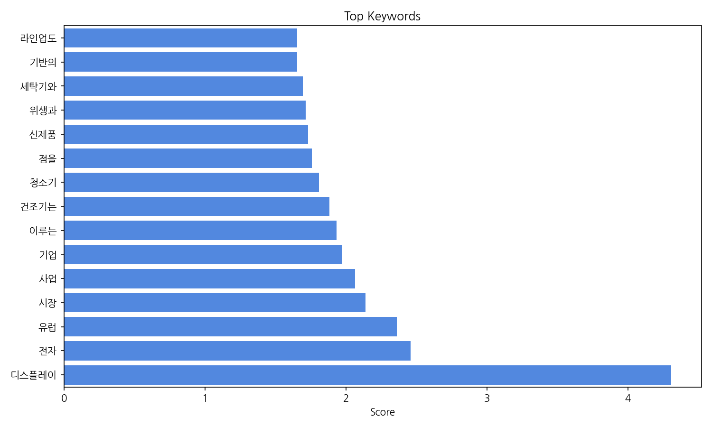
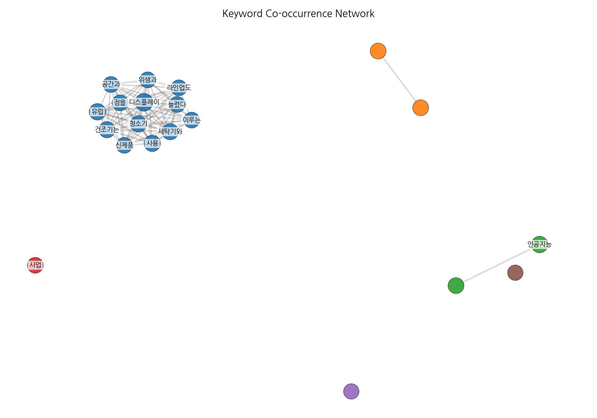
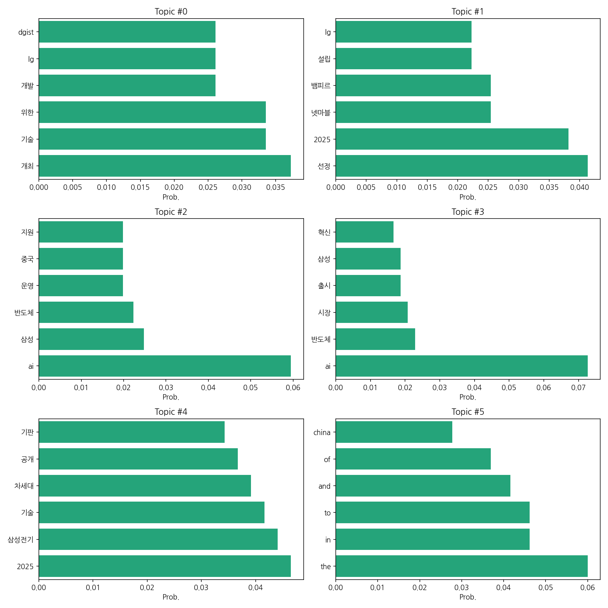
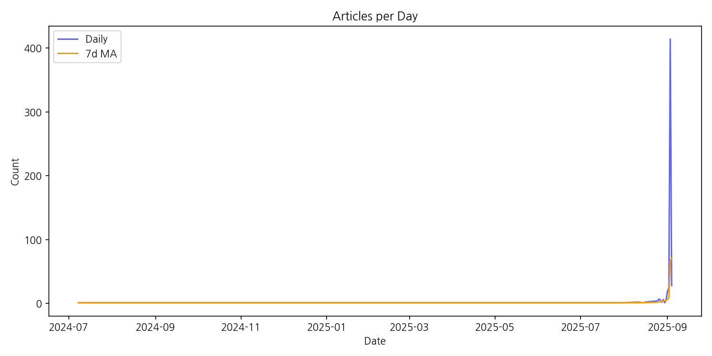

이번 기간 핵심 토픽과 키워드, 주요 시사점을 요약합니다.
핵심 맥락 설명: 제공된 데이터는 LG와 삼성을 중심으로 한 한국 기업들의 기술 개발 및 투자 동향을 보여줍니다. 특히 AI, 반도체, 차세대 기술(기판 등) 분야에 대한 집중적인 투자와 개발, 그리고 관련 기업들의 사업 확장 및 성과에 대한 뉴스 기사가 다수를 차지합니다. 여기에는 새로운 기술 개발, 시장 진출, 투자 유치 등 다양한 활동이 포함되어 있으며, 2025년을 기점으로 관련 뉴스의 양이 급증하는 것을 확인할 수 있습니다.
최근 변화/스파이크: 2025년 9월 초에 뉴스 기사 수가 급격히 증가하는 스파이크 현상이 나타났습니다. 이는 특정 기술 발표나 사업 전략 공개 등과 같은 주요 이벤트가 발생했음을 시사하며, 관련 기업들의 향후 행보에 대한 높은 관심을 반영합니다.
실무 인사이트:
주요 기업의 기술 개발 동향 및 시장 진출 전략을 지속적으로 모니터링하고 분석하여, 시장 변화에 대한 선제적 대응 전략을 수립해야 합니다. 특히 AI, 반도체 분야의 기술 발전 속도가 매우 빠르므로, 경쟁 우위 확보를 위한 지속적인 연구 개발 투자가 필수적입니다.
| Rank | Keyword | Score |
|---|---|---|
| 1 | 디스플레이 | 4.306 |
| 2 | 전자 | 2.458 |
| 3 | 유럽 | 2.362 |
| 4 | 시장 | 2.139 |
| 5 | 사업 | 2.065 |
| 6 | 기업 | 1.97 |
| 7 | 이루는 | 1.934 |
| 8 | 건조기는 | 1.882 |
| 9 | 청소기 | 1.81 |
| 10 | 점을 | 1.758 |
| 11 | 신제품 | 1.732 |
| 12 | 위생과 | 1.715 |
| 13 | 세탁기와 | 1.696 |
| 14 | 기반의 | 1.656 |
| 15 | 라인업도 | 1.654 |




핵심 맥락 설명: 제공된 데이터는 LG와 삼성을 중심으로 한 한국 기업들의 기술 개발 및 투자 동향을 보여줍니다. 특히 AI, 반도체, 차세대 기술(기판 등) 분야에 대한 집중적인 투자와 개발, 그리고 관련 기업들의 사업 확장 및 성과에 대한 뉴스 기사가 다수를 차지합니다. 여기에는 새로운 기술 개발, 시장 진출, 투자 유치 등 다양한 활동이 포함되어 있으며, 2025년을 기점으로 관련 뉴스의 양이 급증하는 것을 확인할 수 있습니다.
최근 변화/스파이크: 2025년 9월 초에 뉴스 기사 수가 급격히 증가하는 스파이크 현상이 나타났습니다. 이는 특정 기술 발표나 사업 전략 공개 등과 같은 주요 이벤트가 발생했음을 시사하며, 관련 기업들의 향후 행보에 대한 높은 관심을 반영합니다.
실무 인사이트:
주요 기업의 기술 개발 동향 및 시장 진출 전략을 지속적으로 모니터링하고 분석하여, 시장 변화에 대한 선제적 대응 전략을 수립해야 합니다. 특히 AI, 반도체 분야의 기술 발전 속도가 매우 빠르므로, 경쟁 우위 확보를 위한 지속적인 연구 개발 투자가 필수적입니다.
| Idea | Target | Value Prop | Score |
|---|---|---|---|
| AI 기반 맞춤형 유럽 시장 디스플레이 솔루션 제공 | 유럽 지역 중소/중견 디스플레이 제조업체 및 유통업체 (직원 수 50-500명) | AI 기반 플랫폼을 통해 고객의 특정 요구사항에 맞춘 디스플레이 솔루션을 빠르고 효율적으로 제공합니다. 다양한 디자인 및 크기, 지속 가능한 소재 옵션을 제공하며, AI 기반 예측 시스템을 통해 재고 관리 및 배송 효율을 높입니다. 경쟁사 대비 빠른 생산 및 배송으로 고객 만족도를 극대화합니다. | 3.8 |
| 유럽 시장 진출 위한 AI 기반 스마트 팩토리 에너지 관리 솔루션 | 유럽 지역 중소/중견 제조업체 (직원 수 50-500명) | AI 기반의 스마트 팩토리 에너지 관리 솔루션을 통해 실시간 에너지 사용량 모니터링, 예측 분석 및 최적화를 제공합니다. 복잡한 시스템 없이 사용이 간편하며, 에너지 비용 절감 및 탄소 배출 감소를 지원하여 지속가능한 경영을 가능하게 합니다. 경쟁 솔루션 대비 사용자 친화적인 인터페이스와 맞춤형 컨설팅을 제공하여 도입 … | 3.8 |
| 유럽 시장 공략을 위한 맞춤형 AI 기반 스마트팩토리 솔루션 | 유럽 중소/중견 제조업체 (직원 수 100-1000명) | AI 기반의 예측 정비 및 생산 최적화 기능을 통해 생산성을 향상시키고 불필요한 비용을 절감합니다. 유럽 현지 규정 및 언어를 완벽하게 준수하며, 현지 엔지니어 지원을 통해 원활한 시스템 구축 및 운영을 지원합니다. 경쟁사 대비 경쟁력 있는 가격과 유연한 구독 모델을 제공합니다. | 3.5 |
| 미래형 스마트 의류 개발 및 판매 | 20-40대의 패션에 관심이 많고, 스마트 기기를 적극적으로 활용하는 젊은층 남녀 | 세련된 디자인과 편안한 착용감을 갖춘 스마트 의류를 합리적인 가격으로 제공합니다. 다양한 센서와 AI 기반 분석 기술을 통해 건강 관리, 개인 맞춤형 피드백 등 차별화된 기능을 제공하여 기존 스마트 의류의 한계를 극복합니다. 소비자의 라이프스타일에 맞춘 다양한 디자인과 기능 선택지를 제공하여 높은 만족도를 제공합니다. | 3.5 |
| AI 기반 유럽 스마트홈 에너지 관리 솔루션 | 유럽 지역의 개인 주택 소유주 및 소규모 사업체 (10-50명) | AI 기반의 스마트홈 에너지 관리 시스템을 통해 에너지 소비량을 최대 30% 절감하고, 탄소 배출량을 줄일 수 있습니다. 사용자 친화적인 인터페이스와 실시간 데이터 분석으로 에너지 사용 패턴을 파악하고 효율적인 관리를 지원합니다. 경쟁 솔루션 대비 저렴한 가격과 손쉬운 설치로 높은 접근성을 제공합니다. 개별 사용자의 에너… | 3.5 |